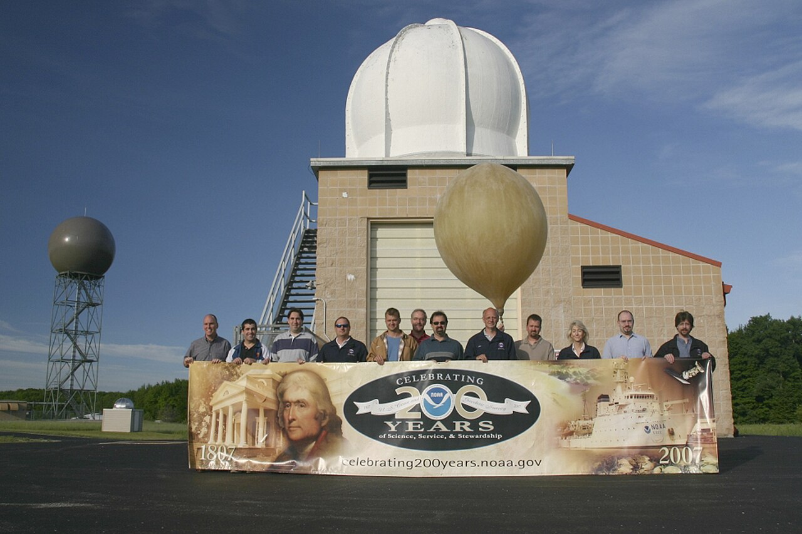

하늘로 올라간 풍선은 왜 터질까?
교과서 p. 100학습 목표
- 기압의 연직 분포로 정역학 평형을 이해하고, 대기 중 연직 운동의 원인을 추론할 수 있다.
- 대기를 움직이는 다양한 힘을 설명할 수 있다.

예시: 높이 올라갈수록 바깥 기압이 낮아져, 풍선·봉지 안의 공기가 팽창하기 때문입니다. 물이 가득 든 컵에 종이를 덮어 뒤집는 시연으로 기압의 작용을 보여 주면 좋습니다. 교과서 운영안은 3차시(기압의 연직 분포·정역학 평형 / 대기를 움직이는 힘·탐구 2차시)입니다.
2차시(100분) 수업 운영안
| 차시 | 단계 | 시간 | 활동 |
|---|---|---|---|
| 1차시 | 동기 유발 | 5분 | "우리 몸을 누르는 공기의 무게는 약 20톤?" 페트병 찌그러뜨리기 영상 |
| 핵심 개념 1 (1) | 15분 | 토리첼리 실험, 기압의 단위, 높이에 따른 기압 변화와 해면 기압 | |
| 핵심 개념 1 (2) | 20분 | 연직 기압 경도력과 정역학 평형, 정역학 방정식 계산(II-1과 비교) | |
| 정리 | 10분 | O/X ① | |
| 2차시 | 핵심 개념 2 | 25분 | 네 가지 힘(기압 경도력·전향력·구심력·마찰력)의 방향·크기, 크기 비교 계산 |
| 탐구 활동 | 12분 | 회전 원판 쇠구슬 실험(시뮬레이션), 푸코 진자 | |
| 정리 | 5분 | O/X ②, 힘 비교표 완성 | |
| 형성 평가 | 8분 | 문항 풀이, 스스로 확인하기 |
기압의 연직 분포와 정역학 평형
교과서 p. 100 ~ 101(1) 기압과 연직 기압 경도력
- 기압: 단위 면적에 작용하는 공기의 힘. 공기 분자가 모든 방향으로 움직이므로 모든 방향으로 똑같이 작용한다.
- 단위는 주로 hPa(1 hPa = 1 m²에 100 N). 해수면의 기압을 1기압(표준 기압, 약 1013 hPa)이라 한다.
- 토리첼리는 지표의 대기압이 76 cm 수은 기둥의 무게와 같다는 것을 실험으로 알아냈다.
- 기압 경도력: 두 지점 사이의 기압 차로 생기는 힘. 공기는 기압이 높은 곳에서 낮은 곳으로 움직인다.
- 높이 올라갈수록 공기 밀도가 작아져 기압이 낮아진다. 그래서 지표에서 위쪽으로 연직 기압 경도력이 작용한다.
(2) 정역학 평형과 대기의 연직 운동
- 공기에도 질량이 있어 중력이 작용하므로, 공기는 연직 방향으로 잘 움직이지 않는다.
- 정역학 평형: 위로 작용하는 연직 기압 경도력과 아래로 작용하는 중력의 크기가 같은 상태. 대부분의 공기 덩어리는 이 상태이다.
- 정역학 평형이 깨지면 연직 운동이 일어난다. 보통 연직 운동은 수평 운동보다 훨씬 느리지만, 두 힘의 차이가 커지면 구름·태풍·뇌우 같은 기상 현상이 생기고 연직 속도가 수십 cm/s~수 m/s에 이른다.
2. 대기의 연직 운동이 활발한 기상 현상을 찾아 설명해 보자. (예: 구름 생성, 태풍, 뇌우)
자세히 알아보기 ① 기압을 재고, 높이에 따라 비교하기 심화 정리
- 기압: 공기가 단위 넓이를 수직으로 누르는 힘. 단위는 주로 hPa (1 hPa = 100 Pa = 100 N/m²)
- 토리첼리 실험: 수은을 채운 약 1 m 유리관을 수은 그릇에 거꾸로 세우면 수은 기둥이 약 76 cm에서 멈춘다. 그릇의 수은 면을 누르는 기압 = 수은 기둥 76 cm가 누르는 압력
- 1기압 = 수은 기둥 76 cm = 약 1013 hPa = 물기둥 약 10 m
- 높이에 따른 변화: 위로 갈수록 위에 놓인 공기가 줄고 밀도도 작아져 기압이 낮아진다. 전체 공기의 약 50%가 높이 약 5.5 km 아래에 있다.
- 해면 기압: 기압은 장소·시각·높이마다 다르므로, 측정값을 해수면 높이 값으로 보정해 일기도에서 비교한다.
• 지표 약 1013 hPa → 약 5.5 km에서 약 500 hPa(절반) → 약 16 km에서 약 100 hPa
• 지표 부근에서는 대략 10 m 올라갈 때마다 약 1 hPa씩 줄어든다.
• 높이 올라갈수록 같은 높이 차에 대한 기압 감소량이 작아진다(위쪽 공기가 더 희박하므로).
자세히 알아보기 ② 대기의 정역학 평형 심화 정리
- 연직 기압 경도력: 아래쪽 기압이 위쪽보다 높으므로 공기에는 위쪽으로 기압 경도력이 작용한다.
- 정역학 평형: 위로 작용하는 연직 기압 경도력과 아래로 작용하는 중력이 거의 같아 공기가 연직으로 크게 움직이지 않는 상태
- 정역학 방정식: 공기 기둥의 아랫면·윗면 기압 차가 만든 힘 (P₁ − P₂)A = 공기의 무게 ρAΔZ·g 에서 ΔP = −ρgΔZ (위로 갈수록 기압 감소). II-1에서 배운 해수의 식과 같은 꼴이다.
- 평형이 깨질 때: 지표의 국지적 가열, 공기의 수렴 등으로 정역학 평형이 깨지면 연직 운동이 생기고 구름과 강수가 나타날 수 있다.
지표 부근 공기 밀도 ρ ≈ 1.2 kg/m³, g ≈ 9.8 m/s², ΔZ = 1000 m
ΔP ≈ −1.2 × 9.8 × 1000 ≈ −11760 Pa ≈ −118 hPa (약 120 hPa 감소)
• 같은 1000 m라도 바닷물(ρ ≈ 1030)에서는 약 100기압이 변한다. 공기는 밀도가 매우 작아 변화가 작다.
개념 확인 ① O/X
대기를 움직이는 네 가지 힘
교과서 p. 102 ~ 103기압 경도력 · 전향력 · 구심력 · 마찰력
① 기압 경도력
기압 차로 생기며 바람을 일으키는 근본적인 힘. 기압이 높은 곳 → 낮은 곳, 등압선에 수직으로 작용한다.
② 전향력
지구 자전 때문에 큰 규모의 움직이는 공기에 작용. 북반구는 운동 방향의 오른쪽 직각, 남반구는 왼쪽 직각. 속력에 비례하고 고위도일수록 크다.
③ 구심력
원운동하는 물체의 궤적을 유지하도록 중심 방향으로 방향을 바꾸는 힘. 등압선이 곡선일 때의 바람에 작용한다.
④ 마찰력
운동 반대 방향으로 작용해 속도를 줄인다. 풍속과 지표면 거칠기가 클수록 크다 (해양 < 평야 < 숲 우거진 산악).
- 대기 경계층(마찰층): 지표 마찰의 영향을 받는 약 1 km 높이까지의 대기층 / 자유 대기: 그 위쪽. 위로 갈수록 마찰이 줄어 풍속이 커진다.
자세히 알아보기 ③ 바람에 작용하는 네 가지 힘 심화 정리
| 힘 | 방향 | 크기 (단위 질량당) | 특징 |
|---|---|---|---|
| 수평 기압 경도력 | 고기압 → 저기압, 등압선에 직각 | (1/ρ) × (ΔP/ΔH) | 바람을 일으키는 근본적인 힘. 등압선 간격이 좁을수록 크다 |
| 전향력 | 북반구: 운동 방향의 오른쪽 직각 | 2vΩ sin φ | 방향만 바꿈. 풍속이 클수록, 고위도일수록 크다. 적도에서 0 |
| 구심력 | 회전 중심 쪽 | v² / r | 곡선 운동(저기압·고기압 주위)에서 방향을 계속 바꿔 줌 |
| 마찰력 | 운동 방향의 반대 | k × v (k: 마찰 계수) | 풍속이 클수록, 지표가 거칠수록 크다. 주로 지상 약 1 km 아래에서 작용 |
• 기압 경도력: 100 km에 4 hPa 차이(400 Pa), ρ = 1.2 → 400 ÷ (1.2 × 10⁵) ≈ 3.3 × 10⁻³ m/s²
• 전향력: 풍속 10 m/s, 위도 45° → 2 × 10 × 7.29 × 10⁻⁵ × 0.71 ≈ 1.0 × 10⁻³ m/s²
• 구심력: 풍속 20 m/s, 반지름 500 km → 400 ÷ (5 × 10⁵) = 8 × 10⁻⁴ m/s²
→ 모두 비슷한 크기라서 큰 규모의 바람에서는 서로 균형을 이룬다. 다음 차시(지균풍·경도풍)의 출발점이다.
- 위도와 전향력: 위도 90°의 전향력을 C라 하면 위도 30°에서 C/2, 위도 45°에서 약 0.71C이다.
- 대기 경계층과 자유 대기: 지표 마찰의 영향을 받는 지상 약 1 km까지를 대기 경계층, 그 위를 자유 대기라 한다. 경계층에서는 위로 갈수록 풍속이 빨라진다. 마찰력은 산악 > 평야 > 해수면 순으로 크다.
개념 확인 ② O/X
회전 원판을 이용한 전향 효과 실험하기
교과서 p. 102탐구 · 돌아가는 원판 위에 굴린 쇠구슬
목표 회전 원판 실험으로 전향 효과를 설명할 수 있다.
준비물 회전 원판, 종이, 쇠구슬, 집게, 스탬프잉크, 굴림대
- 회전 원판에 종이를 올리고, 정지한 원판의 중심에서 가장자리로 잉크 묻힌 쇠구슬을 굴려 경로를 관찰한다.
- 원판을 시계 반대 방향, 시계 방향으로 각각 돌리며 같은 방법으로 관찰한다.
- 시계 반대 방향으로 더 빠르게 돌리며 다시 관찰한다.
결과 및 정리
1. 정지·회전·회전 방향·회전 속도에 따른 경로 차이를 비교해 보자. 2. 운동하는 물체에 작용하는 전향 효과를 설명해 보자.
2. 시계 반대 방향으로 자전하는 북반구에서는 운동 방향의 오른쪽으로, 시계 방향으로 자전하는 남반구에서는 왼쪽으로 전향 효과가 작용한다. 자전 효과가 큰 고위도일수록 더 많이 휘고, 저위도일수록 덜 휜다.
스스로 확인하기
1. 정역학 평형 상태에서 대기의 연직 운동은?
2. 기압 경도력, 전향력, 구심력, 마찰력을 각각 설명해 보자.
3. 창의력 더하기 · 기압 경도력이 같을 때, 적도 해양에서 고위도 육지로 가면 바람은?
개념 확인 문제
그림 출처
사진은 NOAA의 퍼블릭 도메인 자료입니다. 모식도와 시뮬레이션은 직접 만들었습니다.